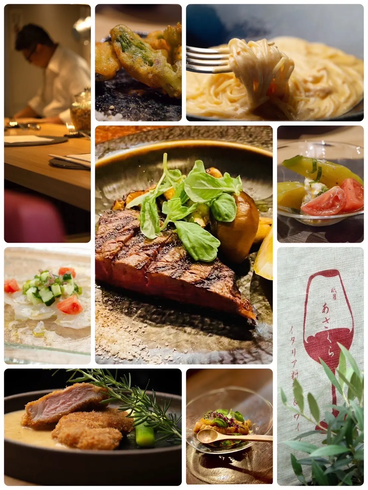
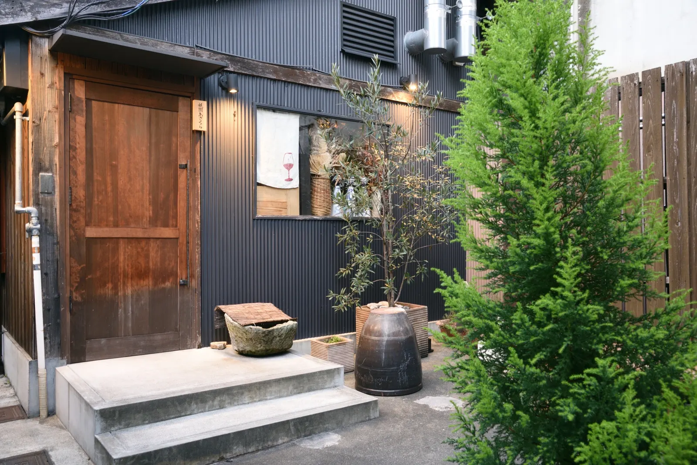

招牌
Pasta · 手打意面
从大蒜橄榄油到海胆奶油 —— 以简约手法呈现，再以京都的克制收尾。



Italian Cuisine & Wine · 京都 祇园
手打意面与时令意式料理，佐以京都特有的静谧。晚市 17:30 起。
Concept
祇園あさくら坐落在京都东山、距祇园仅数步之遥的静谧一角。意式技法与日本食材在吧台对面相遇；座位不多，节奏舒缓，愿您一道一道、一杯一杯地度过夜晚。
Menu
现点现做的手打意面，另备前菜与时令主菜。价格均为含税价。
招牌
从大蒜橄榄油到海胆奶油 —— 以简约手法呈现，再以京都的克制收尾。

单点
小盘前菜、烤时蔬与时令肉鱼料理 —— 完整菜单请询问店内工作人员。



Space
面对开放式厨房的亲密吧台，藏在祇园附近东山的静谧小巷里。
温暖木作、聚焦灯光与主厨吧台 —— 夜晚在此从容停留。
顺着标有「祇園あさくら」的窄巷前行，距祇园仅数步之遥。

Visit
京都 东山 · 建议提前预约。